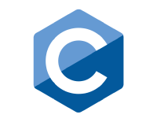

¿Qué es CodTI?
{CodTI}
CodTI es una comunidad formada por estudiantes y profesores apasionados en las tecnologías de la información y que te ayudarán a encontrar tu talento en TI. Actualmente, CodTI tiene 4 grupos de talentos TI.
{CodTI}
{CodTI}
CodTI es una comunidad formada por estudiantes y profesores apasionados en las tecnologías de la información y que te ayudarán a encontrar tu talento en TI. Actualmente, CodTI tiene 4 grupos de talentos TI.
Es un grupo apasionado en la resolución de problemas computacionales de una forma óptima y en el menor tiempo posible a través de la programación. En este Talento TI aprendemos algoritmos y estructuras de datos avanzadas, dominamos un lenguaje de programación y desarrollamos habilidades en la resolución de problemas de forma colaborativa. Una de las actividades principales es la participación en concursos de programación a nivel regional y nacional.
Somos la rama de la comunidad apasionados por el desarrollo de webs funcionales donde nuestro objetivo es crear la mayor cantidad de páginas mientras adquirimos conocimiento y pulimos nuestras habilidades, además de estar en constante evolución pues aprendemos todos en conjunto.
En este Talento TI aprendemos lo necesario para poder aterrizar nuestras ideas a la realidad y crear aplicaciones funcionales, que pueden ser desarrolladas para dispositivos móviles como smartphones, smartwatches y tablets.

Java a día de hoy sigue siendo uno de los lenguajes más usados a nivel mundial y con más entradas laborales aparte de que es usado en muchas compañías de elite no solo se enfoca en un solo apartado de la programación si no que es usado para diferentes propósitos.
Esta es una rama de nuestra comunidad la cual tiene como objetivo ayudar a entender temas de programación ya sea desde lo básico hasta lo avanzado mediante asesorías las cuales son solicitadas en nuestra página de Facebook, al igual de que cada inicio de semestre damos pequeños cursos de programación básica, logrando así que aquellos que estén interesados en aprender, puedan comprender de mejor manera el mundo de la programación.